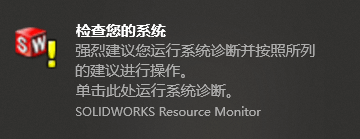
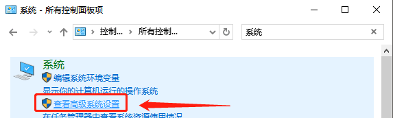
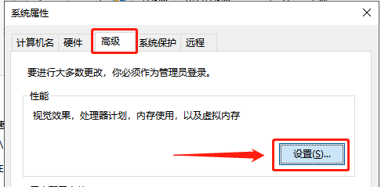
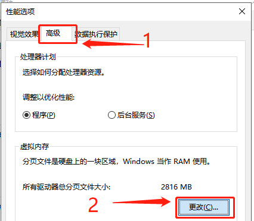
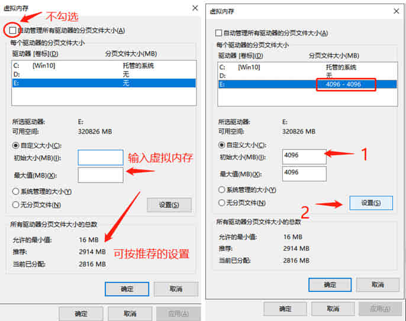
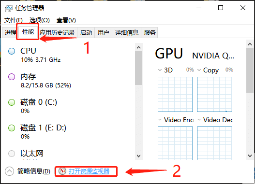
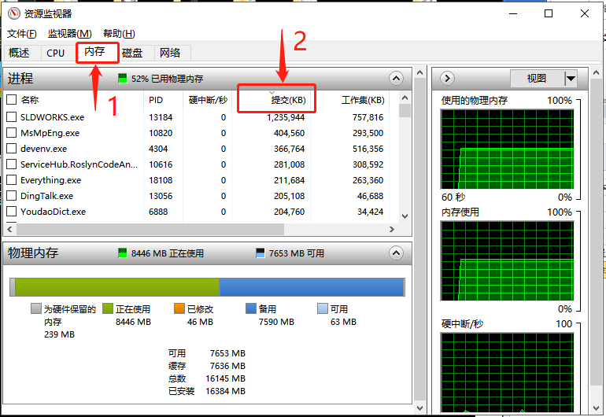
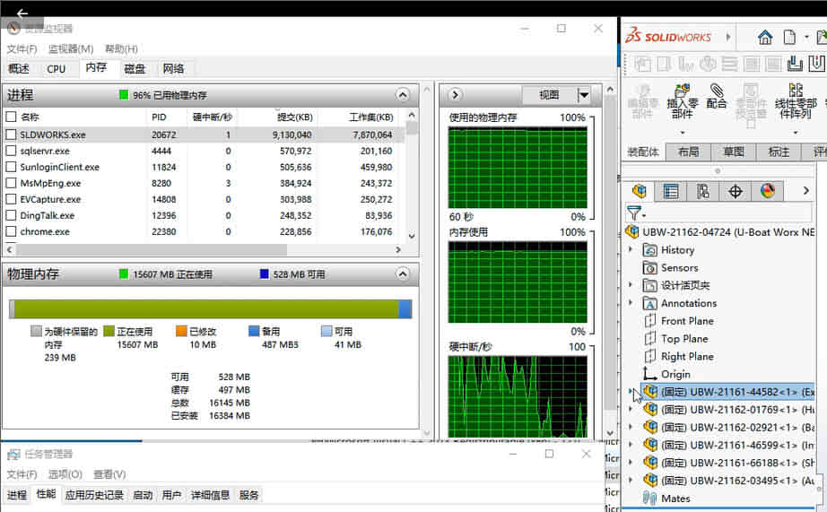
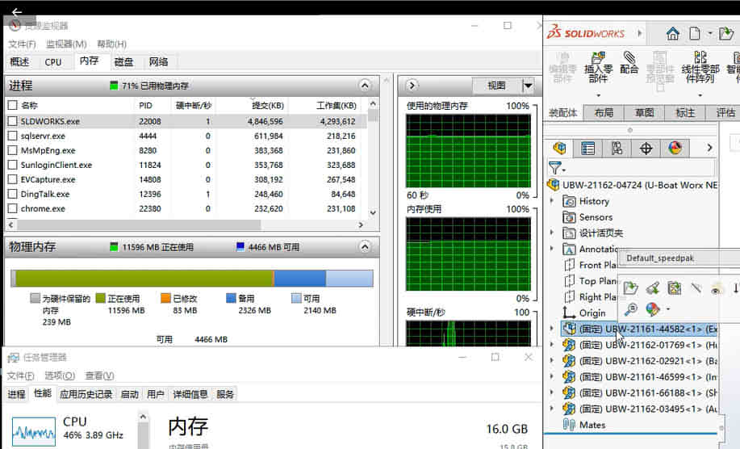
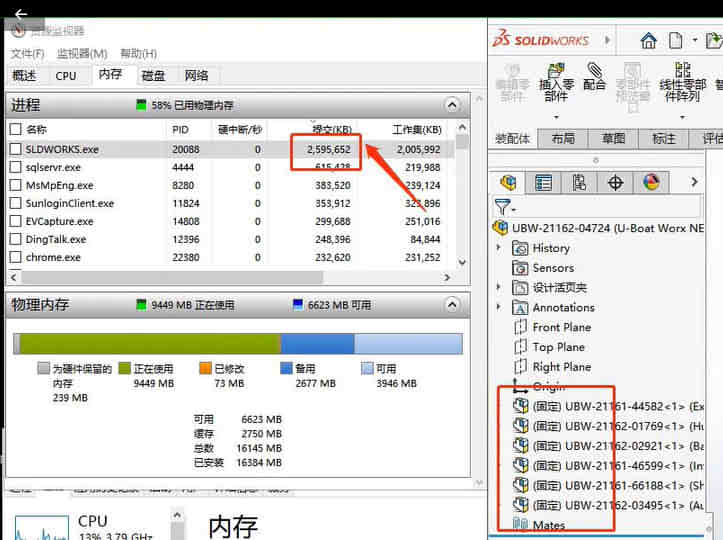

内存不足问题
-A
-B：增加 Speedpak 对内存影响的说明
问题：
“SOLIDWORKS 资源监控器”检测 “内存使用”限制超过 78% 时，将显示一系列警告。
SOLIDWORKS 资源监控器：用于监视您的 SOLIDWORKS
软件或您的系统所使用的资源。
当您运行的资源不足时，（大概是占用超 70%就开始提示）SOLIDWORKS
资源监控器在 Windows
任务栏的通知区域中提供信息，帮助您采取适当行动以避免系统故障或丢失数据。
你可能需要了解的内存小知识：即：计算机内存使用=物理内存+虚拟内存
“内存使用”：是系统提供或预留给 SOLIDWORKS
以及任何其他运行在计算机上的进程的内存量。操作系统会建立”内存使用”的限制，即物理随机存储器
(RAM) 的内存加上您的虚拟内存（分页内存）大小。（例如：计算机有 32 GB 的
RAM，虚拟内存（分页内存）大小是 8 GB，那么”内存使用”限制为 40 GB）
方法1：设置虚拟内存
验证分页文件大小配置。建议使用”系统自动分配大小”。要验证您的分页文件大小，请执行以下步骤：
1.转至”控制面板”>“系统”。单击”高级系统设置”。
2.在”性能”组中，单击”设置”。
3.单击”高级”选项卡。在”虚拟内存”组中，单击”更改”。
4.确保”系统自动分配大小”选项至少在一个驱动器上处于激活状态。
通过分页文件确保操作系统和其他进程有更多的可用内存。例如，如果您没有分页文件，那么操作系统就不得不将物理内存提供给运行的进程。在您的计算机上可能有一个需要
2 GB 内存的进程，但仅使用了 500 MB。这意味着操作系统要强制预留 2 GB
的物理内存，不得由其他进程使用，而其中有 1.5 GB 物理内存未被激活使用。
方法2：排除消耗内存最多进程
1.按下 Ctrl + Alt + Delete 并启动 Windows®”任务管理器”。
2.单击”性能”选项卡，然后单击”打开资源监视器”。
3.单击”内存”选项卡。
4.单击”提交
(KB)”列标题按降序排列。消耗提交内存最多的进程会显示在最顶部。
（如果有其他占用异常大的进程，则可用考虑临时退出，为 SW 设计让出资源）
利用该信息了解和调查管理消耗最多提交内存的进程的必要步骤。您可以尝试结束那些不需要的进程。
如果进程是基本进程，则调查其占用太多提交内存的原因。
如果进程不是 SOLIDWORKS
进程，且您需要进一步协助，请咨询开发此进程的公司的支持团队。
如果您需要计算机上运行的所有进程，并且确定所有进程均按预期运行，那么您可能需要为您的计算机安装更多的物理内存。
方法3：使用Speedpak
本次测试数据：6000+零部件（独立零件 1500 个），总装文件大小：95.4MB。全部文件大小：1.07GB
关于 Speedpak 的使用方法，可以往期文章或视频。
还原模式
还原模式下的内存占用，电脑是几乎占满的状态（15.9/16GB）如图。还原模式下的零部件内存信息会被加载进内存，从而产生过多的内存占用的情况。
单个 Speedpak
Speedpak 对子装配体做优化处理，该模式下的零件会被隐藏（不可编辑），所以这部分的信息几乎不进内容。那么对于内存来说，占用就不会过高（如图从 9GB 减少至 4GB 内存占用）
全部 Speedpak
全部 Speedpak，总装配体只有图形显示，其子装配体就不能编辑，这个模式下打开文件将变得非常的快（”似乎和大型装配体审阅”有的一拼）。如图的内存占用从 9GB 减少至 2GB，大大减少内存的占用。
编辑和更新 Speedpak
对于需要编辑的零部件，我们可以打开需编辑的零部件。在做完编辑后，可在总装使用：
将 Speedpak 设定到父系，来恢复部件的可编辑状态（这个命令会将部件内存加载进来）
更新 Speedpak 子装配体，这个会保持 Speedpak 模式，然后把修改后的零件更新到总装里（推荐用这个）